计算能力是学习数学的基础，小学生要学好数学，必须掌握正确、快速的计算方法，以提高计算效率．
速算和巧算，就是通过观察题目中数字的特点和变化规律，必要的时候对题中各个数进行适当的转化，并根据题目的特点灵活运用运算定律或其他比较巧妙的方法，解决较复杂的计算题．这既是一种技巧，也是一种思维训练，可以提高学生的观察、分析、判断能力，促进思维和智力的发展．
【解题技巧】
1．掌握巧算中经常要用到的一些运算定律，如乘法交换律、结合律、分配律以及除法分配律等变式定律与性质．
2．根据题目特点，灵活运用性质，如逆用公式等．
【基本公式】
1．运算律的应用：
乘法分配率a×（b＋c）＝a×b＋a×c
乘法结合率（a×b）×c＝a×（b×c）
商不变性质a÷b＝（a×n）÷（b×n），（n≠0）
2．分组计算：对于组合后计算得出特殊值的项进行合并同类项，然后计算，会更加简便．
3．裂项法和拆分法：将一个数变成两个或多个数，从而方便运算．
4．凑整法：将一个接近整数的数凑成整数再减去其增加或减少的数．
（第十一届“走美杯”初赛）下面算式中结果最大的是_____．
A．
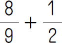
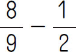
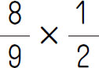
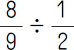
【答案】 D．
【解析】 观察题目可以发现，显然A＞B．再比较A、C、D即可．因为
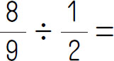
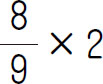
所以D＞C；又因为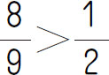
，所以D＞A，即D最大．【举一反三1】
在
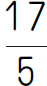
、3.04、3.4和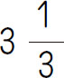
四个数中，第二小的数是_____．（第八届“希望杯”决赛）计算：2012×0.318＋201.2×8.49-20.12×6.7＝_____．
【答案】 2213.2．
【解析】 2012×0.318＋201.2×8.49-20.12×6.7
＝2012×0.318＋2012×0.849-2012×0.067
＝2012×（0.318＋0.849-0.067）
＝2012×1.1
＝2012×（1＋0.1）
＝2012×1＋2012×0.1
＝2012＋201.2
＝2213.2．
【举一反三2】
（第五届“走美杯”决赛）计算：223×7.5＋22.3×12.5＋230÷4-0.7×2.5＋1＝_____．
1×2＋2×3＋3×4＋…＋49×50＝_____．
【答案】 41650．
【解析】 设S＝1×2＋2×3＋3×4＋…＋49×50．
1×2×3＝1×2×3
2×2×3＝2×3×4－1＝2×3×4－1×2×3
3×4×3＝3×4×5－2＝3×4×5－2×3×4
……
49×50×3＝49×50×51－48＝49×50×51－48×49×50
3S＝1×2×3＋2×3×3＋3×4×3＋…＋49×50×3
＝49×50×51
即S＝41650．
【举一反三3】
1×4＋4×7＋7×10＋…＋49×52＝____．
（第十届“走美杯”决赛）算式
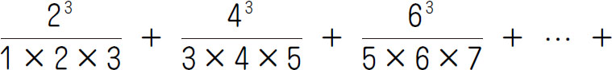
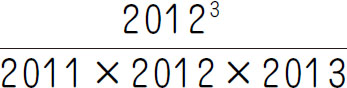
的计算结果是_____．【答案】
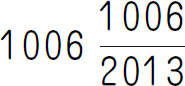
．【解析】 原式可变形为
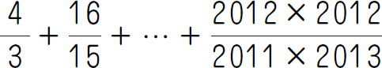
，把每个分数化为“1＋分数单位”的形式，再把每个分数单位进行拆分，简单计算即可．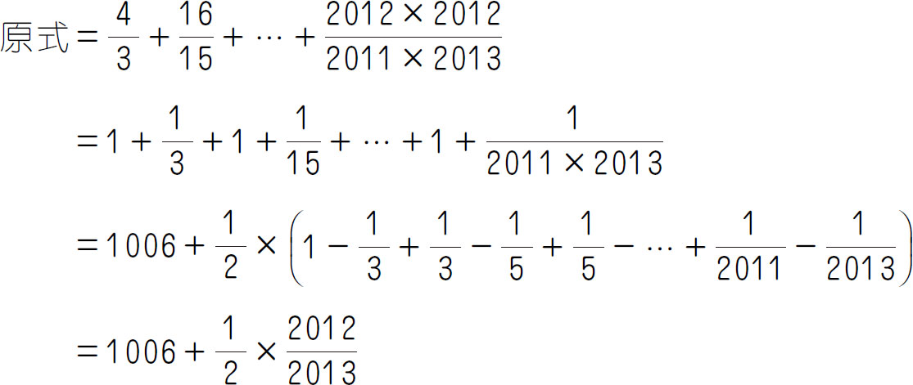
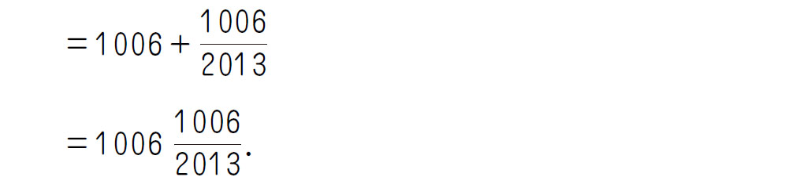
【举一反三4】
（第九届“走美杯”决赛）
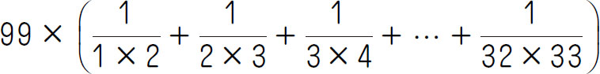
的计算结果是_____．1．计算：9.996＋29.98＋169.9＋3999.5
2．计算：9.9×9.9＋1.99
3．计算：2.437×36.54＋243.7×0.6346
4．（第二十届“祖冲之杯”）计算：
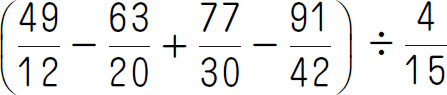
5．计算：
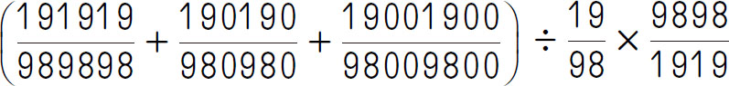
6．计算：
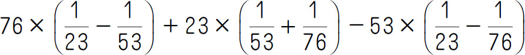
7．（第十四届“中环杯”初赛）计算：
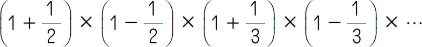
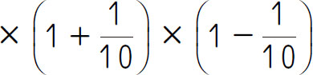
＝____．8．（第十八届“祖冲之杯”小学数学邀请赛）计算
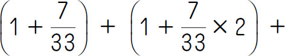
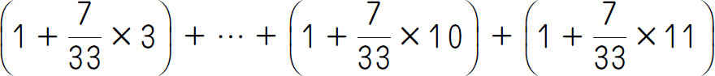
＝____．